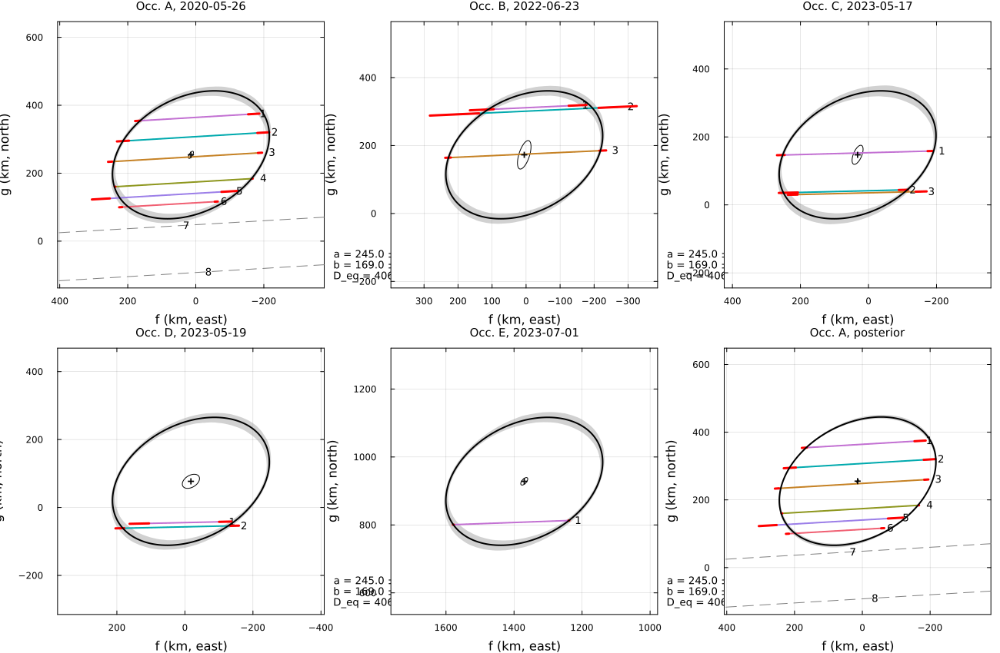
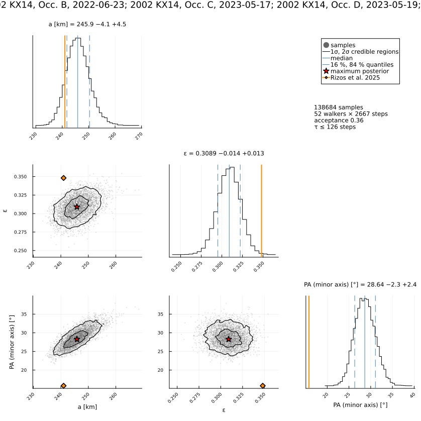
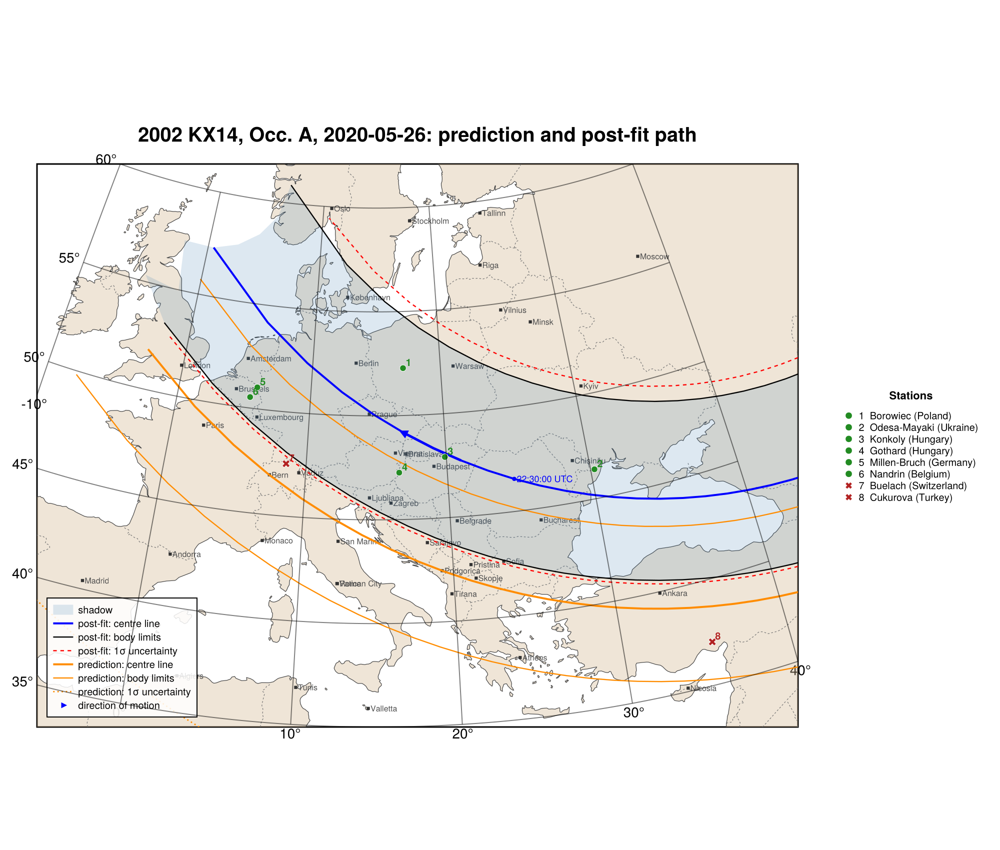

2002 KX14, five events 2020–2023
A multi-event fit: five stellar occultations by (119951) 2002 KX14 (2020–2023), reduced from the published timings of Rizos et al. (2025), A&A 697, A62, "The trans-Neptunian object (119951) 2002 KX14 revealed via multiple stellar occultations", with the corrected Occ. D timings of the corrigendum (A&A 708, C1, 2026): 15 positive chords of five events (Table B.2) and two negative chords.
The paper fits event A, ties the other events to its ellipse with a penalty, re-centres all chords and refits them with an algebraic ellipse and Monte Carlo errors. Here all five events are fitted at once:
- one apparent ellipse: the body is nearly spherical, or a Maclaurin spheroid seen at an almost constant aspect (Δm < 0.05 mag);
- a separate centre for every event: each event has its own ephemeris and star-position errors. That of event E, a star with Gaia RUWE = 1.5, is about 1500 km off.
Event D, with two chords, has a mirror solution. A prior on its ephemeris offset (close to that of event C two days earlier) resolves it. The posterior gives the diameter and the geometric albedo:
| a (km) | b (km) | PA major (°) | D_eq (km) | p_V | |
|---|---|---|---|---|---|
| Rizos et al. (2025) | 241.0 ± 7.2 | 157.1 ± 5.2 | 105.8 ± 5.8 (Occ. A) | 389.2 ± 8.7 | 0.119 ± 0.007 |
| joint fit (errors × √(χ²/dof)) | 245.0 ± 12.0 | 169.0 ± 9.2 | 117.9 ± 6.3 | 406.9 ± 17.9 | |
| posterior (timing errors only) | 409.2 −6.4 +7.2 | 0.108 ± 0.005 |
The joint fit gives a larger minor axis (169 vs 157 km), a 1σ difference with the scaled errors.
The data are transcribed in examples/data/2002kx14_2020_2023.jl, with the stored JPL Horizons ephemerides, so the script runs offline:
julia --project=. examples/2002kx14_2020_2023.jl [output_dir] (default: examples/output/2002kx14_2020_2023)The code is not run when the manual is built. The output after each section is that of the last run of examples/2002kx14_2020_2023.jl, stored in examples/output/2002kx14_2020_2023/output.txt.
using Occultations, Random, Printf, Statistics
using Plots
import CairoMakie # saves the GeoMakie maps (Makie figures)
include(joinpath(@__DIR__, "standard_figures.jl"))
include(joinpath(@__DIR__, "data", "2002kx14_2020_2023.jl"))
out = length(ARGS) >= 1 ? ARGS[1] : mkpath(joinpath(@__DIR__, "output", "2002kx14_2020_2023"))
rng = MersenneTwister(2025)
P = KX14_PAPER
PAmaj(r) = mod(r[:position_angle][1] + 90, 180) # position angle of the major axis
row(tag, r) = @printf("%-44s a = %5.1f ± %4.1f b = %5.1f ± %4.1f PA(major) = %5.1f ± %4.1f D_eq = %5.1f ± %4.1f\n",
tag, r[:equatorial_radius]..., r[:semi_minor_axis]..., PAmaj(r), r[:position_angle][2],
2r[:equivalent_radius][1], 2r[:equivalent_radius][2])Events and geometry (paper values in parentheses)
evs = kx14_events()
for (ev, s) in zip(evs, KX14_STARS)
k, D = s[1], ev.ca.dist_km
@printf("Occ. %s %s: %d chords (%d negative), distance %.2f au (%.2f), velocity %.2f km/s (%.2f), star %.2f km (%.2f)\n",
k, s[2][1:10], length(ev.chords), count(isnegative, ev.chords), D / 1.495978707e8, P.distance_au[k],
ev.ca.vel, P.velocity[k], apparent_diameter(ev.star, D), P.star_diameter_km[k])
endOcc. A 2020-05-26: 8 chords (2 negative), distance 38.01 au (38.01), velocity 23.41 km/s (23.41), star 1.27 km (1.26)
Occ. B 2022-06-23: 3 chords (0 negative), distance 37.88 au (37.88), velocity 24.33 km/s (24.33), star 0.52 km (0.58)
Occ. C 2023-05-17: 3 chords (0 negative), distance 37.97 au (37.97), velocity 20.38 km/s (20.38), star 1.27 km (1.25)
Occ. D 2023-05-19: 2 chords (0 negative), distance 37.96 au (37.96), velocity 20.83 km/s (20.83), star 0.88 km (0.89)
Occ. E 2023-07-01: 1 chords (0 negative), distance 37.85 au (37.85), velocity 23.74 km/s (23.74), star 1.10 km (0.65)Occultation A alone (6 chords)
@printf("%-44s a = %5.1f ± %4.1f b = %5.1f ± %4.1f angle = %5.1f ± %4.1f\n", "published (Table 2)",
P.A.a..., P.A.b..., P.A.pa...)
rA = fit_limb(evs[1]; scale_errors=true, rng=rng)
row(@sprintf("this work (errors × √(χ²/dof), χ²/dof = %.1f)", reduced_chi2(rA)), rA)
println("(the paper's angle is consistent with the position angle of the major axis)")
for x in check_negative_chords(rA)
@printf(" negative chord %-22s %s, %.0f km from the limb\n", x.chord, x.conflict ? "CROSSES THE LIMB" : "consistent", x.distance)
endpublished (Table 2) a = 241.5 ± 11.0 b = 159.0 ± 8.1 angle = 105.8 ± 5.8
this work (errors × √(χ²/dof), χ²/dof = 13.4) a = 248.8 ± 18.0 b = 167.5 ± 11.9 PA(major) = 118.6 ± 7.9 D_eq = 408.3 ± 24.8
(the paper's angle is consistent with the position angle of the major axis)
negative chord Buelach (Switzerland) consistent, 24 km from the limb
negative chord Cukurova (Turkey) consistent, 168 km from the limbAll five events: one ellipse, one centre per event
r1 = fit_limb(evs; rng=rng)
@printf("best fit: χ² = %.1f, centre of event D at g = %+.0f km, of event C at g = %+.0f km\n", r1.chi2,
r1[:center_g_4][1], r1[:center_g_3][1])Event D has only two chords: the centre can lie on either side of them. Events C and D are two days apart, so their ephemeris offsets must nearly agree. The solution with D on the same side as C:
r2 = fit_limb(evs; init=Dict(:center_f_4 => r1[:center_f_3][1], :center_g_4 => r1[:center_g_3][1]), starts=1, rng=rng)
@printf("other side: χ² = %.1f, centre of event D at g = %+.0f km (paper: D − C = %+.0f km in g; here %+.0f km)\n",
r2.chi2, r2[:center_g_4][1], 66.0 - 134.4, r2[:center_g_4][1] - r2[:center_g_3][1])The Bayesian answer is a prior that D's offset lies within about 30 km of C's:
cC = (r1[:center_f_3][1], r1[:center_g_3][1])
priors = Dict(:center_f_4 => (cC[1], 30.0), :center_g_4 => (cC[2], 30.0))
init = Dict(:center_f_4 => cC[1], :center_g_4 => cC[2])
rJ = fit_limb(evs; priors=priors, init=init, scale_errors=true, rng=rng)
println()
@printf("%-44s a = %5.1f ± %4.1f b = %5.1f ± %4.1f angle = %5.1f D_eq = %5.1f ± %4.1f\n",
"published (Fig. 1)", P.a..., P.b..., 105.8, P.D_eq...)
row(@sprintf("joint fit, prior D≈C (χ²/dof = %.1f, scaled)", reduced_chi2(rJ)), rJ)
println("\ncontact residuals [s]:")
for x in contact_residuals(rJ)
@printf(" Occ. %s %-24s %-9s %+6.2f s\n", "ABCDE"[x.event], x.chord, x.kind, x.dt)
endbest fit: χ² = 117.8, centre of event D at g = -185 km, of event C at g = +146 km
other side: χ² = 124.6, centre of event D at g = +74 km (paper: D − C = -68 km in g; here -73 km)
published (Fig. 1) a = 241.0 ± 7.2 b = 157.1 ± 5.2 angle = 105.8 D_eq = 389.2 ± 8.7
joint fit, prior D≈C (χ²/dof = 7.8, scaled) a = 245.0 ± 12.0 b = 169.0 ± 9.2 PA(major) = 117.9 ± 6.3 D_eq = 406.9 ± 17.9
contact residuals [s]:
Occ. A Borowiec (Poland) immersion +1.17 s
Occ. A Borowiec (Poland) emersion +0.32 s
Occ. A Odesa-Mayaki (Ukraine) immersion +0.73 s
Occ. A Odesa-Mayaki (Ukraine) emersion -0.01 s
Occ. A Konkoly (Hungary) immersion +0.81 s
Occ. A Konkoly (Hungary) emersion +0.49 s
Occ. A Gothard (Hungary) immersion -0.10 s
Occ. A Gothard (Hungary) emersion -0.08 s
Occ. A Millen-Bruch (Germany) immersion +1.29 s
Occ. A Millen-Bruch (Germany) emersion +2.35 s
Occ. A Nandrin (Belgium) immersion +1.16 s
Occ. A Nandrin (Belgium) emersion +0.94 s
Occ. B Javalambre (Spain) immersion +1.39 s
Occ. B Javalambre (Spain) emersion +0.76 s
Occ. B La Hita (Spain) immersion -2.99 s
Occ. B La Hita (Spain) emersion +3.38 s
Occ. B Calar Alto (Spain) immersion -0.29 s
Occ. B Calar Alto (Spain) emersion +0.05 s
Occ. C Shiawassee (USA) immersion +0.52 s
Occ. C Shiawassee (USA) emersion +0.27 s
Occ. C Comer Field (USA) immersion +0.56 s
Occ. C Comer Field (USA) emersion -0.70 s
Occ. C Nederland (USA) immersion -2.31 s
Occ. C Nederland (USA) emersion -1.15 s
Occ. D GOA (Brazil) immersion +1.26 s
Occ. D GOA (Brazil) emersion -2.73 s
Occ. D Sonear3 (Brazil) immersion -0.90 s
Occ. D Sonear3 (Brazil) emersion +0.42 s
Occ. E Apache Point (USA) immersion -0.00 s
Occ. E Apache Point (USA) emersion +0.00 sPosterior, diameter and albedo
r0 = fit_limb(evs; priors=priors, init=init, rng=rng) # unscaled: the likelihood
post = sample(r0; nsteps=4000, rng=rng)
s = summarize(post)
for n in (:equatorial_radius, :oblateness, :position_angle)
@printf(" %-18s = %8.3f -%.3f +%.3f\n", n, s[n].median, s[n].minus, s[n].plus)
end
d = derived_samples(post; n=4000, rng=rng)
Deq = 2 .* d.equivalent_radius
# geometric albedo pV = (C / D · 10^(-H/5))², C = 1330 ± 18 km, H_V = 4.978 ± 0.017
pV = [(1330 + 18randn(rng)) / D * 10^(-(P.H_V[1] + P.H_V[2] * randn(rng)) / 5) for D in Deq] .^ 2
q(x) = quantile(x, [0.15865525393145707, 0.5, 0.8413447460685429])
let (lo, md, hi) = q(Deq)
@printf(" D_eq = %.1f -%.1f +%.1f km (paper %.1f ± %.1f)\n", md, md - lo, hi - md, P.D_eq...)
end
let (lo, md, hi) = q(pV)
@printf(" pV = %.3f -%.3f +%.3f (paper %.3f ± %.3f)\n", md, md - lo, hi - md, P.albedo...)
end
println(" autocorrelation times [steps]: ", round(maximum(autocorrelation_time(post)); digits=0), " (max)")
println(" (the likelihood uses the timing errors only: χ²/dof ≈ $(round(reduced_chi2(r0); digits=1)), so these")
println(" intervals are narrower than the scaled covariance errors above)") equatorial_radius = 245.859 -4.108 +4.492
oblateness = 0.309 -0.014 +0.013
position_angle = 28.643 -2.315 +2.448
D_eq = 408.8 -6.5 +7.0 km (paper 389.2 ± 8.7)
pV = 0.108 -0.005 +0.005 (paper 0.119 ± 0.007)
autocorrelation times [steps]: 126.0 (max)
(the likelihood uses the timing errors only: χ²/dof ≈ 7.8, so these
intervals are narrower than the scaled covariance errors above)Astrometry of the five events (offsets from the JPL Horizons ephemeris)
for k in 1:5
a = astrometry(rJ; event=k)
@printf(" Occ. %s %s RA %s Dec %s Δα cos δ = %+7.2f ± %.2f mas Δδ = %+7.2f ± %.2f mas\n", "ABCDE"[k],
isot(a.epoch; digits=0)[1:19], a.ra_str, a.dec_str, a.offset_ra, a.ra_err, a.offset_dec, a.dec_err)
end
println(" (event E: the star has Gaia RUWE = 1.5 – its position, not the body's, is off)") Occ. A 2020-05-26T22:28:59 RA 17 24 20.67395 Dec -23 21 49.9914 Δα cos δ = +0.52 ± 0.29 mas Δδ = +9.22 ± 0.40 mas
Occ. B 2022-06-23T00:51:35 RA 17 35 07.97605 Dec -23 28 25.8095 Δα cos δ = +0.20 ± 0.75 mas Δδ = +6.29 ± 1.56 mas
Occ. C 2023-05-17T08:51:51 RA 17 45 03.27066 Dec -23 32 34.5118 Δα cos δ = +1.16 ± 0.62 mas Δδ = +5.35 ± 1.02 mas
Occ. D 2023-05-19T03:08:53 RA 17 44 54.98947 Dec -23 32 31.5856 Δα cos δ = -0.64 ± 0.88 mas Δδ = +2.80 ± 0.77 mas
Occ. E 2023-07-01T07:09:09 RA 17 41 01.95694 Dec -23 30 54.1157 Δα cos δ = +49.90 ± 0.38 mas Δδ = +33.82 ± 0.42 mas
(event E: the star has Gaia RUWE = 1.5 – its position, not the body's, is off)Figures
plots = [plot(rJ; event=k, title="Occ. $("ABCDE"[k]), $(KX14_STARS[k][2][1:10])", legend=false, titlefontsize=10)
for k in 1:5]
savefig(plot(plots..., plot(post; event=1, ndraw=400, legend=false, title="Occ. A, posterior", titlefontsize=10);
layout=(2, 3), size=(1300, 850)), joinpath(out, "2002kx14_events.png"))
# as SORA (the paper draws no region): the pointwise 1σ envelope
plotsp = [plot(rJ; event=k, uncertainty=:pointwise, title="Occ. $("ABCDE"[k]) (pointwise 1σ, as SORA)", legend=false,
titlefontsize=10) for k in 1:5]
savefig(plot(plotsp...; layout=(2, 3), size=(1300, 850)), joinpath(out, "2002kx14_events_paper.png"))
savefig(cornerplot(post; vars=[:equatorial_radius, :oblateness, :position_angle],
axislabels=Dict(:equatorial_radius => "a [km]", :oblateness => "ε", :position_angle => "PA (minor axis) [°]"),
truths=Dict(:equatorial_radius => P.a[1], :oblateness => 1 - P.b[1] / P.a[1],
:position_angle => mod(P.A.pa[1] - 90, 180)), truth_label="Rizos et al. 2025"),
joinpath(out, "2002kx14_corner.png"))
savefig(histogram(Deq; bins=50, xlabel="area-equivalent diameter [km]", label="posterior", normalize=true),
joinpath(out, "2002kx14_diameter.png"))
# the standard figures: limb fits (default, 68.3 % region, as the paper), posterior, maps (prediction,
# post-fit, comparison) and the globe
standard_figures("2002kx14", rJ; out=out, posterior=post, event=1,
projection="+proj=laea +lon_0=15 +lat_0=48", limits=(-5, 40, 35, 60), window=900, marks=60)
println("figures written to ", out)The five events with the joint ellipse, and the posterior limbs of event A:

The posterior of the ellipse, with the published values:

The prediction and the post-fit shadow path of event A:

The results are discussed in Comparison with published reductions.